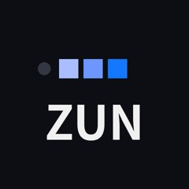
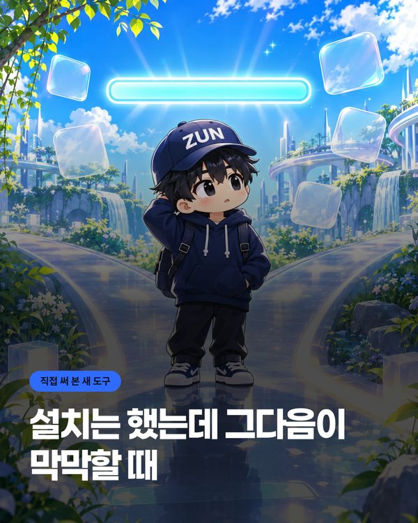
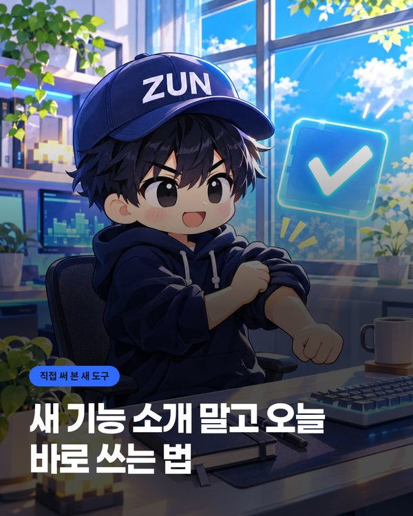

STEP 1 · 인터뷰
질문에 답하면서 나를 꺼내요
경험 · 관점 · 고집 · 말투처럼 8가지 각도로 돌아가며 한 번에 하나씩 묻습니다. 글로 쓰기 어려우면 고르기나 고쳐 쓰기로 답해도 됩니다.
말투화면 예시
아래 문장을 평소 내 말투로 다시 써 주세요.
왜 묻나요? 계정 글이 내 목소리로 읽히려면 평소 말투를 알아야 해서요.
글둘 중 고르기고쳐 쓰기말투 척도
AI와 짧게 인터뷰하면 내 개성에서 계정 주제를 찾고, 이름 · 소개글 · 색 · 카드뉴스까지 이어 줍니다. 첫 게시물을 올리기 전에 9칸이 채워진 내 프로필을 먼저 보세요.
취업 · 대외활동 · 프리랜서처럼 나를 보여 줘야 하는 순간은 누구에게나 옵니다. 주변에 인스타를 시작해 보라고 하자, 다들 하고는 싶은데 이렇게 말했습니다.

운영자도 같은 곳에서 시작했습니다. AI로 만든 것을 기록하려고 연 계정이 석 달 만에 팔로워 2,840명이 됐고, 그때 직접 부딪히며 정한 것들을 FirstFeed에 담았습니다.
단계마다 나를 다시 설명하지 않아도 됩니다. 인터뷰로 만든 프로필 하나가 이름부터 카드뉴스까지 모든 생성의 입력이 됩니다.
경험 · 관점 · 고집 · 말투처럼 8가지 각도로 돌아가며 한 번에 하나씩 묻습니다. 글로 쓰기 어려우면 고르기나 고쳐 쓰기로 답해도 됩니다.
주제마다 근거가 된 내 말을 붙이고, 그 말이 실제 답에 있는지 코드가 한 번 더 확인합니다. 마음에 안 들면 고치거나 다른 방향 2개를 더 받아요.
인스타 글자 수 제한 안에서 아이디와 소개글을 만들고, 글자가 잘 읽히는 색 조합만 남깁니다. 내 개성을 닮은 캐릭터 그림 프롬프트도 뽑아 줘요.
소재를 붙여 넣으면 고정한 템플릿으로 카드뉴스를 그리고 캡션을 씁니다. 업로드 순서대로 폴더를 만들고, 폰으로 바로 받을 수 있어요.



시리즈 계획 9개를 실제 프로필 격자처럼 깔아 보여 줍니다. 마음에 들 때 하나씩 만들면 됩니다.
AI는 정해 둔 움직임 중에서 고르기만 하고, 코드가 프레임마다 글자가 잘리는 영역에 들어가지 않는지 잽니다. 720 · 1080 · 4K로 뽑아요.
움직임을 CSS로 흉내 낸 예시
「3번 카드 너무 설명조야」라고 말하면 그 카드만 다시 씁니다. 적용 전에는 세트가 바뀌지 않고, 언제든 되돌릴 수 있어요.
화면 예시
같은 각도를 연달아 묻지 않게 코드가 막습니다.
고른 값만 영어 프롬프트로 조립해요. 생김새를 AI가 지어내지 않습니다.
같은 와이파이에서 QR로 카드와 캡션을 받아요. 10분 뒤 저절로 닫혀요.
같은 인터뷰 답을 같은 AI 모델에 검사 없이 넣어 세 번 받아 봤습니다(게시물 제목 27개).
제목에 내가 말한 적 없는 개수(「실수 5가지」, 「기능 3개」)가 붙었고, 한 번은 하지 않은 경험을 계정 주제로 넣었습니다.
내가 말하지 않은 숫자 · 날짜 · 영문 이름이 나오면 코드가 잡아 다시 쓰게 해서, 저장되는 결과에는 남지 않습니다.

실제 앱 화면 · 「AI가 고친 곳」 — 어디를 왜 바꿨는지 사람 말로 남깁니다.
FirstFeed는 내 컴퓨터에서 돌고, AI는 이미 쓰고 있는 Claude 구독으로 부릅니다.
인터뷰 답, 프로필, 만든 카드는 내 컴퓨터에 저장돼요. 얼굴이 나오는 원본 영상은 밖으로 보내지 않습니다.
AI를 부르기 직전마다 구독 로그인인지 확인하고, 아니면 호출하지 않습니다. 모르는 요금으로 돌지 않게요.
앱이 부르는 AI는 파일 쓰기와 명령 실행이 막혀 있어요. 인스타에 대신 로그인하거나 자동으로 올리지도 않습니다.
claude를 실행해 로그인해 두세요.$ git clone https://github.com/djkdb/FirstFeed.git $ cd FirstFeed && npm install $ npx playwright install chromium # 카드를 그릴 브라우저, 처음 한 번 $ npm run doctor # 설치 점검, 문제마다 다음 할 일 $ npm run dev # → http://localhost:5173
더블클릭으로 여는 설치 파일은 준비 중입니다. 자세한 안내는 README에 있어요.